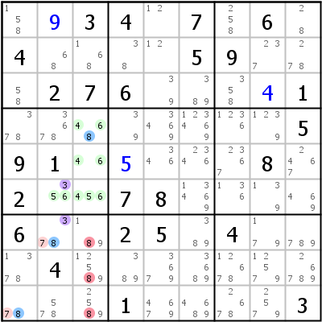
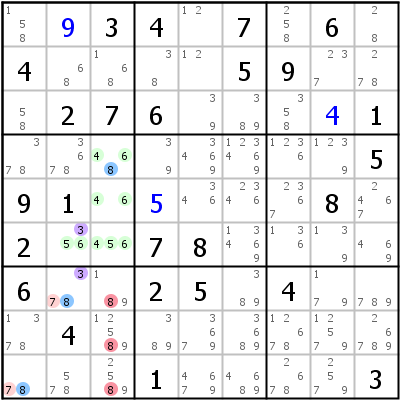
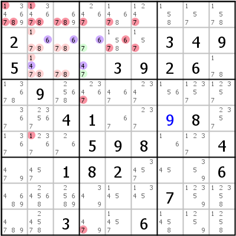
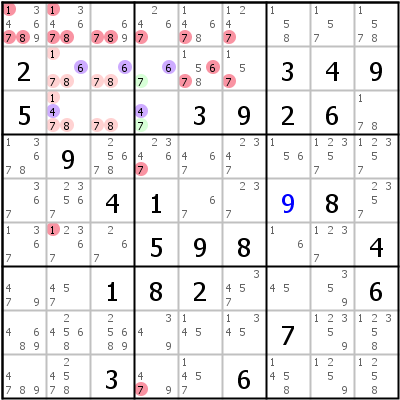
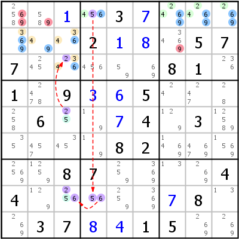
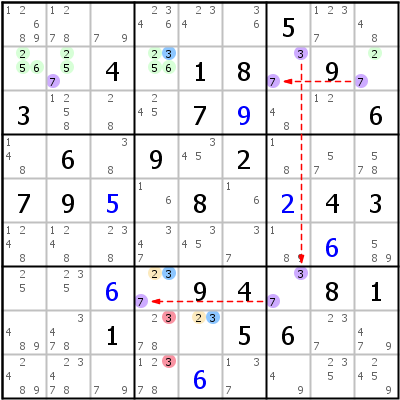

ALS - Almost Locked Sets (Fast Gesperrte Mengen)
Inhaltsverzeichnis
Einführung
Almost Locked Set (ALS) (Fast Gesperrte Menge)
Ein Locked Set (Gesperrte Menge) (oder Naked Set - Nackte Menge) ist eine Gruppe von N ungelösten Zellen innerhalb eines Hauses, die gemeinsam nur noch N Kandidaten übrig haben. Es ist ein sehr einfaches Konzept, das es erlaubt, alle Kandidaten des Locked Sets aus allen anderen Zellen desselben Hauses zu löschen.
Ein Almost Locked Set (Fast Gesperrte Menge) ist ein Gruppe von ungelösten Zellen innerhalb eines Hauses, die ein Locked Set wäre, hätte sie nur einen Kandidaten weniger. Etwas formaler: Eine Gruppe von N Zellen mit N+1 Kandidaten. Jeder Sudoku-Spieler kennt das Phänomen: Wenn man nach Naked Subsets sucht, findet man statt der Locked Sets immer eine Menge ALS.
Ein ALS kann selbst gar nichts, es ist aber möglich ein ALS als Knoten in einer Chain zu verwenden (siehe ALS in Chains). Eine andere Möglichkeit etwas aus einem ALS herauszuholen besteht darin, das ALS mit einem anderen ALS zu kombinieren. Strategien, die dieses Prinzip verwenden, werden hier besprochen.
Restricted Common Candidate (RCC) (Gemeinsamer Beschränkter Kandidat)
Um zwei ALS kombinieren zu können, müssen sie mindestens einen Kandidaten gemeinsam haben. "Gemeinsam" bedeutet dabei, dass alle Instanzen des Kandidaten in ALS 1 alle Instanzen desselben Kandidaten in ALS 2 sehen können. Ein solcher Kandidat wird Restricted Common Candidate (Gemeinsamer Beschränkter Kandidat) oder RCC genannt.
Der Nutzen eines RCCs liegt in der Tatsache, dass er nur in einem der beiden ALS gesetzt werden kann: Alle Zellen eines ALS sehen einander, also kann eine Ziffer prinzipiell nur maximal ein Mal in einem ALS gesetzt werden. Ein RCC ist noch weiter eingeschränkt: Da alle Instanzen des RCC in beiden ALS einander sehen, wird der RCC aus einem ALS komplett entfernt, wenn er im anderen ALS gesetzt wird. Aus dem ersten ALS wird daher ein Locked Set.
Manchmal haben zwei ALS nicht nur einen, sondern zwei RCCs gemeinsam. Solche ALS werden "doubly linked" (doppelt verkettet) genannt und bilden die Basis für einige sehr effektive Strategien.
ALS Überlappungen
Zwei ALS dürfen sich prinzipiell in allen Techniken überlappen. Es gibt nur eine Einschränkung: Der überlappende Bereich darf keinen RCC enthalten.
ALS-XZ
Singly Linked ALS-XZ (Einfach Verkettes ALS-XZ)
Dies ist die einfachste ALS-Strategie: Man finde zwei ALS mit einem RCC (der RCC wird X genannt). Wenn beide ALS eine gemeinsame Ziffer Z enthalten, die nicht der RCC ist, kann Z von allen nicht-ALS-Zellen gelöscht werden, die alle Instanzen von Z in beiden ALS sehen. Ein ALS-XZ ist in Wahrheit eine ALS Chain der Länge 2.
Die Logik hinter ALS-XZ ist ziemlich einfach: Der RCC macht aus mindestens einem der ALS ein Locked Set (welches, ist nicht bekannt). Da aber beide ALS die Ziffer Z enthalten, wird Z auf mindestens eines der ALS beschränkt. Das bedeutet, dass in beiden ALS gemeinsam die Ziffer Z genau ein Mal gesetzt werden muss. Jede Zelle, die alle möglichen Positionen von Z in den beiden ALS sehen kann, kann selber nicht Z sein.
 
 Linkes Beispiel: Wir haben zwei ALS: ALS A (r1c67, Kandidaten {679}) und ALS B (r3c289, {6789}). In beiden ALS kommt die Ziffer 6 nur in Block 3 vor, sie ist also ein RCC (X - violett markiert). Beide ALS haben als gemeinsame Ziffer neben dem RCC noch Ziffer 7 (Z - blau markiert). Die Zellen r3c56 gehören zu keinem ALS und können alle ALS-Zellen, die jemals 7 werden könnten, sehen. 7 kann aus diesen Zellen gelöscht werden.
Rechtes Beispiel: A=r456c3,r6c2 {34568}, B=r7c2,r9c1 {378}, X=3, Z=8 => r789c3<>8. ALS A ist in diesem Beispiel ein bisschen größer (4 Zellen mit 5 Kandidaten), das Prinzip ist das Gleiche.
Doubly Linked ALS-XZ (Doppelt Verkettetes ALS-XZ)
Wenn die beiden ALS zwei RCCs haben, wird es richtig interessant. Erinnern wir uns daran, dass ein RCC nur in einem ALS gesetzt werden kann und das andere ALS in ein Locked Set umwandelt. Wenn wir zwei RCCs haben, muss einer in ALS A platziert werden (er verwandelt ALS B in ein Locked Set) und der andere muss in ALS B platziert werden (er verwandelt ALS A in ein Locked Set). Welcher RCC in welchem ALS sein wird, wissen wir nicht. Beide RCCs in einem ALS geht deshalb nicht, weil sie dann beide aus dem anderen ALS gelöscht würden, wodurch in diesem ALS nur mehr N-1 Kandidaten für N Zellen übrig wären, was natürlich nicht sein kann.
Was kann man aus einem solchen Doubly Linked ALS-XZ schließen? Beide RCCs sind in einem ALS gelockt, die RCCs können daher aus allen nicht-ALS-Zellen in den Häusern, die die RCCs bereitstellen, gelöscht werden. Noch wichtiger aber ist, dass alle ALS-Ziffern, die nicht RCCs sind, auf das jeweile ALS beschränkt werden. Sie können daher in allen Zellen außerhalb der ALS gelöscht werden, die alle Instanzen einer dieser Ziffern sehen (die Eliminierungen können sogar das jeweils andere ALS betreffen, was das ALS-XZ kannibalistisch macht).
 
 Linkes Beispiel: A=r2c239 {2479}, B=r4c23 {124}, X=2,4. ALS A und B sind doppelt verkettet durch Kandidaten 2 und 4, es gibt keine zusätzliche gemeinsame Ziffer Z. Alle Instanzen von RCC 2 sind in Spalte 2, das eliminiert 2 von r1c2. Alle Instanzen von RCC 4 sind in Spalte 3, das eliminiert 4 von r16c3. ALS A hat jetzt noch Ziffern 7 und 9 übrig. Alle Instanzen dieser beiden Ziffern sind auf Zeile 2 beschränkt und können aus allen anderen Zellen der Zeile 2 gelöscht werden. ALS B hat nur noch Ziffer 1 übrig, alle 1er in ALS B sind auf Zeile 4 und Block 4 beschränkt, das löscht alle anderen 1er aus diesen beiden Häusern.
Das ALS-XZ im rechten Beispiel ist der dritte Spielzug in diesem Sudoku (nach einem Hidden Single und einem Locked Candidates Type 1): A=r23c4 {467}, B=r2c23,r3c23 {14678}, X=4,6. RCC 4 ist beschränkt auf Zeile 3 (keine Eliminierungen), RCC 6 auf Zeile 2 (r2c5<>6). ALS A hat Ziffer 7 übrig (Eliminierungen von Block 2 und Spalte 4), ALS B hat 1, 7 und 8 übrig (eliminiert von Block 1 und Spalte 2 - Spalte 2 nur für Ziffer 1). Die letzte Unterscheidung ist wichtig: Ziffern 7 und 8 sind auf Block 1 beschränkt und können daher nur aus diesem Haus gelöscht werden. Ziffer 1 jedoch ist auf die Überschneidung von Block 1 und Spalte 2 beschränkt und kann daher aus beiden Häusern gelöscht werden.
ALS-XY-Wing (ALS-XY-Flügel)
Ein ALS-XY-Flügel benötigt drei ALS, A, B und C (es ist eine ALS Chain der Länge 3: z- A -x- C -y- B -z). ALS A hat RCC X mit ALS C, ALS B hat RCC Y mit ALS C (X und Y dürfen nicht gleich sein). ALS A und ALS B haben die gemeinsame Ziffer Z. Z kann aus allen Zellen gelöscht werden, die alle Instanzen von Z in A und B sehen.
Die Logik ist gleich wie bei einer ALS Chain (siehe unten): Wenn Z nicht in ALS A ist, muss A X enthalten (aus einem ALS darf nur eine Ziffer fehlen). Das heißt, dass C Y enthalten muss, was wiederum bedeutet, dass B Z enthalten muss (in B fehlt jetzt schon Y). Die umgekehrte Richtung funktioniert auch: Wenn ALS B Z nicht enthält, muss Z in ALS A sein.


Linkes Beispiel: A=r7c156 {3678}, B=r579c8 {2389}, C=r9c34 {179}, X,Y=7,9, Z=3. RCC 7 ist auf Block 7 beschränkt, RCC 9 auf Zeile 9 (beide violett markiert - die Übereinstimmung der Nummern ist Zufall). Die gemeinsame Ziffer 3 muss in einer der blauen Zellen gesetzt werden, sie kann nie in r7c7 sein.
Rechtes Beispiel: A=r1c78 {247}, B=r25c4 {679}, C=r259c9 {3467}, X,Y=4,6, Z=7. Man beachte, dass ALS C ebenfalls die Ziffer 7 enthält, das ist für den Spielzug uninteressant.
ALS Chain (ALS Kette)
ALS Ketten sind eine Reihe von ALS, verbunden durch RCCs. Das erste und letzte ALS muss eine gemeinsame Ziffer enthalten, diese Ziffer wird aus allen Zellen gelöscht, die alle Instanzen der Ziffer in beiden Enden der ALS Chain sehen können. Einige Beschränkungen gelten für die RCCs: Keine zwei benachbarten RCCs dürfen gleich sein. Erstellt man ALS Chains, die doppelt verkettete ALS enthalten, sind die Regeln noch etwas komplizierter. Eine Diskussion aller Möglichkeiten mit doppelt verketteten ALS sprengt den Rahmen dieses Führers, genauere Informationen kann man in Restricted Common Adjacency Rules im Player's Forum finden.
Die Logik: Die Kette beweist, dass die gemeinsame Ziffer im End-ALS sein muss, wenn sie nicht im Start-ALS ist, und dass daher diese Ziffer in allen Zellen gelöscht wird, die alle Instanzen der Ziffer im End-ALS sehen können. Ist die gemeinsame Ziffer jedoch im Start-ALS, eliminiert sie sie aus allen Zellen, die alle Instanzen der Ziffer im Start-ALS sehen. Beide Fälle kombiniert (eine typische Verity) ergeben die endgültigen Eliminierungen.
Einige Erklärungen für ALS Chains (oft auch ALS-XY-Chains genannt), basieren darauf, dass die Chains reversibel sind. Das ist allerdings leider für kompliziertere ALS Chains mit doppelt verketteten ALS nicht der Fall. Die oben beschriebene Logik funktioniert aber auch in diesen Fällen.
ALS Chains können in Nice Loop-Notation mit den RCCs als Weak Links zwischen den ALS geschrieben werden.
 Linkes Beispiel: 69- r1c4789 {24569} -5- r8c4 {56} -6- r58c3 {256} -2- r2c123,r3c3 {23469} -69. Nichts Spezielles hier, außer dass die Chain zwei gemeinsame Ziffern hat (6 und 9). Das zweite ALS ist eine einfache zweiwertige Zelle (das kleinste mögliche ALS - zwei Kandidaten in einer Zelle).
Rechtes Beispiel: 3- r2c1249 {23567} -7- r2c7 {37} -3- r7c7 {37} -7- r7c4,r8c5 {237} -3. Zwei ALS sind in dieser Chain doppelt verkettet: r2c7 und r7c7 verkettet durch {37}. Das ist erlaubt, solange alle benachbarten RCCs verschieden sind.
Death Blossom (Todesblüte)
Ein Death Blossom besteht aus einer Stammzelle und aus Blütenblättern. Jedes Blütenblatt ist ein ALS, das ein RCC mit der Stammzelle hat. Wenn ein Blütenblatt für jeden Kandidaten der Stammzelle gefunden werden kann und wenn alle Blütenblätter einen gemeinsamen Kandidaten haben, kann dieser Kandidat aus allen Zellen gelöscht werden, die alle Instanzen des Kandidatens in allen Blütenblättern sehen können.
Sind Überlappungen nicht erlaubt (Standard für HoDoKu), ist es sehr schwer, einen Death Blossom mit mehr als zwei Kandidaten in der Stammzelle zu finden (so ein Death Blossom ist immer ein ALS-XY-Wing). Werden Überlappungen zugelassen (es werden keine Einschränkungen benötigt), können sehr interessante Death Blossoms gefunden werden.
Die Logik hinter Death Blossom ist einfach: Einer der Kandidaten in der Stammzelle muss wahr sein, er beschränkt dann die gemeinsame Ziffer im verketteten ALS.


Linkes Beispiel: [r3c4], -4- r2c23,r3c23 {14678}, -7- r2c4 {67}. Die Stammzelle r3c4 hat RCC 4 mit ALS r2c23,r3c23 und RCC 7 mit ALS r2c4. Beide ALS haben eine gemeinsame Ziffer 6, die 6 aus r2c5 eliminiert. Es handelt sich um einen typischen nicht überlappenden Death Blossom, der in Wirklichkeit ein ALS-XY-Wing ist.
Rechtes Beispiel: [r7c6], -3- r8c3456 {23569}, -6- r8c4 {56}, -9- r8c345 {2569}. In diesem Beispiel überlappen sich ALS 2 und ALS 3 komplett mit ALS 1 (Zelle r8c4 ist in allen drei ALS enthalten!). Das ist erlaubt. Die gemeinsame Ziffer ist 5 (6 ist auch eine gemeinsame Ziffer, ist aber auch ein RCC und darf daher nicht verwendet werden), der Death Blossom eliminiert 5 aus r8c2.
Copyright © 2008-12 von Bernhard Hobiger
Zuletzt geändert am 5. Mai 2025 von shorty#3746
(basierend auf dem 1to9only Github-Repo)
Alles Material auf dieser Site unterliegt der GNU FDLv1.3.